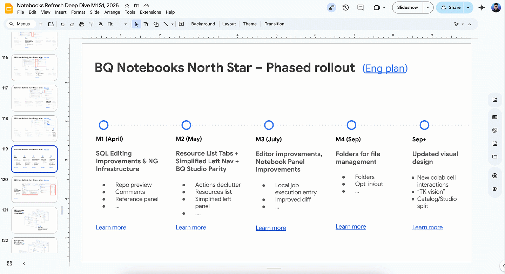
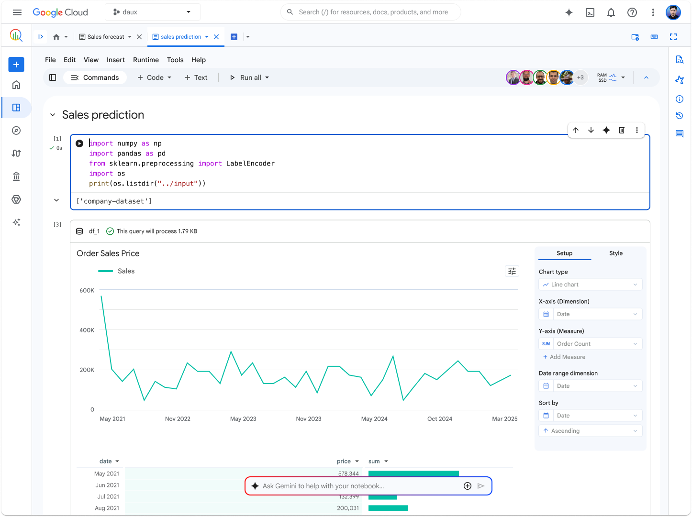
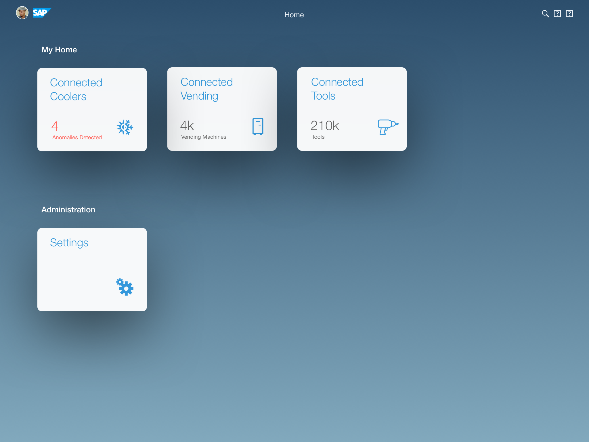
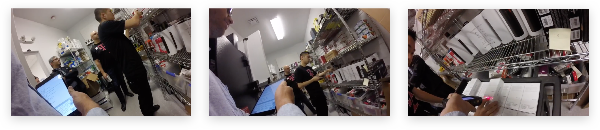
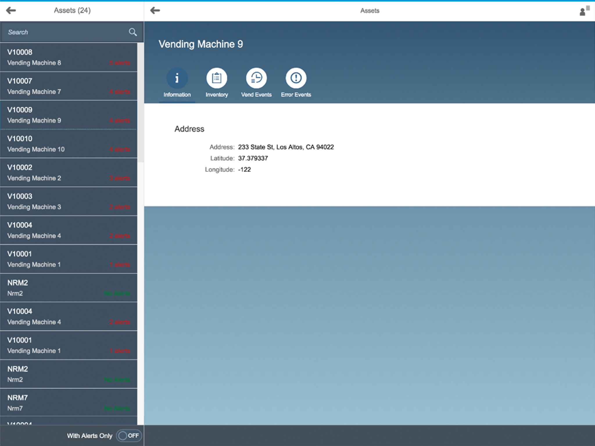

Selected projects include Agentic BigQuery, Notebooks, and iOS design systems for enterprises.
Over the years, I've worked on a range of complex products, focusing on creating tools that scale. Below is a selected list of works that demonstrate this intent.
↓ Scroll / Explore work
An alignment map demonstrating the complexity of data dependencies. It outlines the core entities, their relationships, and logic of flows.
Over 14 months of research and workshops, we mapped out the entire ecosystem of BigQuery workloads.
↓ View case study / Google Cloud Platform
Notebooks is a web-based interactive computational environment for creating and sharing documents that contain live code, equations, and narrative text.
It has become the defacto standard for data scientists and researchers across Google to build ML models and pipelines.
↓ View case study / Google AI & ML
The Fiori Design System has been the skeleton of SAP's design strategy. It has powered thousands of enterprise applications across millions of users.
I led the design system definition and execution across Google and VMware platforms, focusing on high-scale enterprise applications.
↓ View case study / Enterprise iOS Design SystemAn alignment map demonstrating the complexity of data dependencies. It outlines the core entities, their relationships, and logic of flows.
Over 14 months of research and workshops, we mapped out the entire ecosystem of BigQuery workloads.
↓ View case study / Google Cloud PlatformNotebooks is a web-based interactive computational environment for creating and sharing documents that contain live code, equations, and narrative text.
It has become the defacto standard for data scientists and researchers across Google to build ML models and pipelines.
↓ View case study / Google AI & MLThe Fiori Design System has been the skeleton of SAP's design strategy. It has powered thousands of enterprise applications across millions of users.
I led the design system definition and execution across Google and VMware platforms, focusing on high-scale enterprise applications.
↓ View case study / Enterprise iOS Design SystemNotebooks is a web-based interactive computational environment for creating and sharing documents that contain live code, equations, and narrative text.
It has become the defacto standard for data scientists and researchers across Google to build ML models and pipelines.
↓ View case study / Google AI & MLThe Fiori Design System has been the skeleton of SAP's design strategy. It has powered thousands of enterprise applications across millions of users.
I led the design system definition and execution across Google and VMware platforms, focusing on high-scale enterprise applications.
↓ View case study / Enterprise iOS Design SystemAn alignment map demonstrating the complexity of data dependencies. It outlines the core entities, their relationships, and logic of flows.
Over 14 months of research and workshops, we mapped out the entire ecosystem of BigQuery workloads.
↓ View case study / Google Cloud PlatformNotebooks is a web-based interactive computational environment for creating and sharing documents that contain live code, equations, and narrative text.
It has become the defacto standard for data scientists and researchers across Google to build ML models and pipelines.
↓ View case study / Google AI & MLThe Fiori Design System has been the skeleton of SAP's design strategy. It has powered thousands of enterprise applications across millions of users.
I led the design system definition and execution across Google and VMware platforms, focusing on high-scale enterprise applications.
↓ View case study / Enterprise iOS Design SystemAn alignment map demonstrating the complexity of data dependencies. It outlines the core entities, their relationships, and logic of flows.
Over 14 months of research and workshops, we mapped out the entire ecosystem of BigQuery workloads.
↓ View case study / Google Cloud PlatformThe APIs are robust, secure, and support millions of concurrent operations.
"Design is not the veneer. It is the skeletal structure of the strategic intent."


Honorable Mention for Product Design Interface Excellence
Over the years, I've led design systems and complex tools for Google, VMware, SAP, Apple, and Adidas.
FocusGoogle / Sunnyvale, CA
VMware / Palo Alto, CA
SAP / Walldorf, Germany
Apple / Cupertino, CA
SAP / Walldorf, Germany
Adidas / Herzogenaurach, Germany
Nuremberg Institute of Technology